Application web de commande de menus — traiteur à Bordeaux
Parcours visiteur, client, employé et administrateur
Vite & Gourmand est l'application web du traiteur bordelais tenu par Julie et José depuis 25 ans. Elle permet de présenter les menus de l'entreprise (Noël, Pâques, classiques, évènements), de les commander en ligne et de suivre chaque commande jusqu'à sa livraison.
L'application distingue quatre profils :
| Profil | Ce qu'il peut faire |
|---|---|
| Visiteur (non connecté) | Consulter l'accueil, les menus (avec filtres) et leur détail, contacter l'entreprise, créer un compte. |
| Utilisateur (client) | Commander un menu, suivre ses commandes, les modifier ou les annuler tant qu'elles ne sont pas acceptées, donner un avis, gérer ses informations. |
| Employé | Gérer les commandes (statuts, modification, annulation), les menus, les plats, les horaires et valider les avis. |
| Administrateur | Tout ce que fait un employé, plus la gestion des comptes employés et les statistiques (graphique et chiffre d'affaires). |
| Application en ligne | https://vite-et-gourmand-grii.onrender.com |
|---|---|
| Code source (GitHub) | https://github.com/Lakagoull/vite-et-gourmand |
| Installation en local | Voir le fichier README.md du dépôt |
Premier chargement : l'application est hébergée sur une offre gratuite qui se met en veille après 15 minutes sans visite. La première page peut donc mettre environ 30 secondes à s'afficher ; les suivantes sont immédiates.
Ces comptes permettent de réaliser tous les parcours décrits dans ce manuel.
| Profil | Identifiant (e-mail) | Mot de passe |
|---|---|---|
| Administrateur (José) | jose@vite-gourmand.fr | Jose@Admin2026 |
| Employée (Julie) | julie@vite-gourmand.fr | Julie@Employe2026 |
| Client (Sophie) | client.demo@example.com | Client@Demo2026 |
Vous pouvez aussi créer votre propre compte client depuis la page « Créer un compte ».
La page d'accueil présente l'entreprise, met en avant le professionnalisme de l'équipe et affiche les avis clients validés par l'équipe.
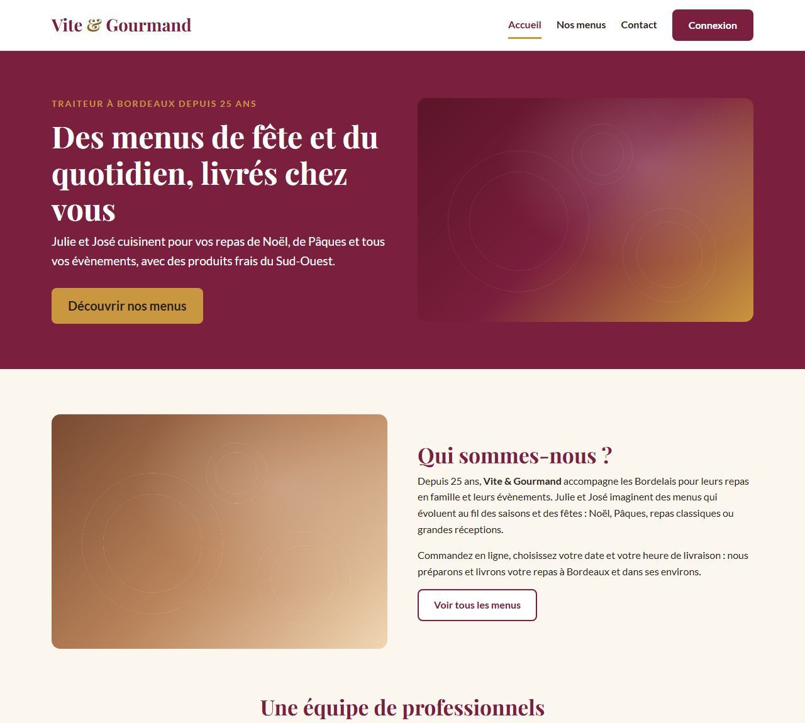
Cliquez sur Nos menus. Chaque menu affiche son titre, sa description, le nombre minimum de personnes et le prix correspondant.
Les filtres à gauche (ou derrière le bouton « Filtrer les menus » sur mobile) permettent une recherche rapide. La liste se met à jour automatiquement à chaque saisie, sans recharger la page :
Le bouton Réinitialiser efface tous les filtres.
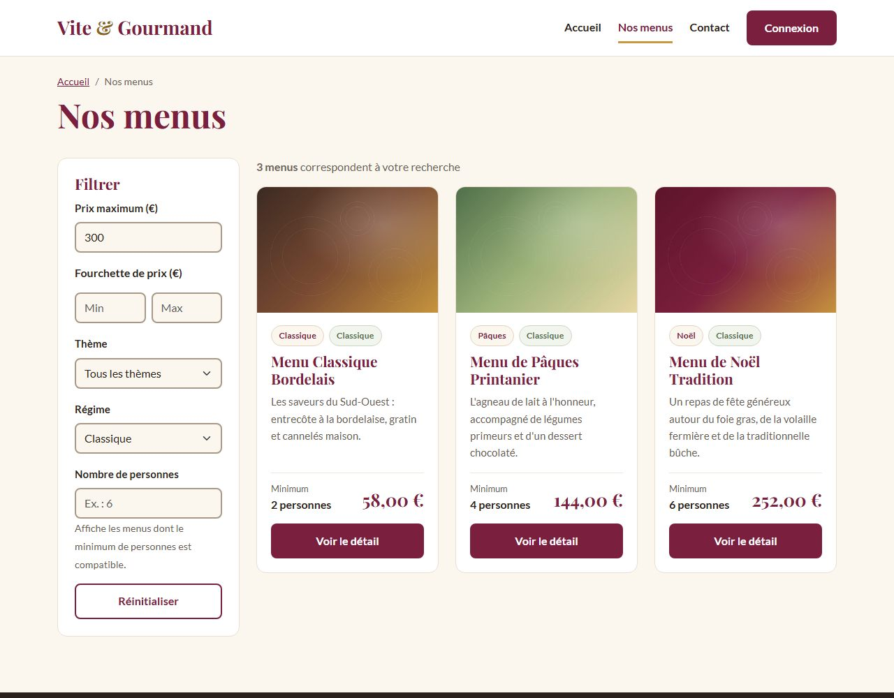
Cliquez sur Voir le détail d'un menu. La page affiche :
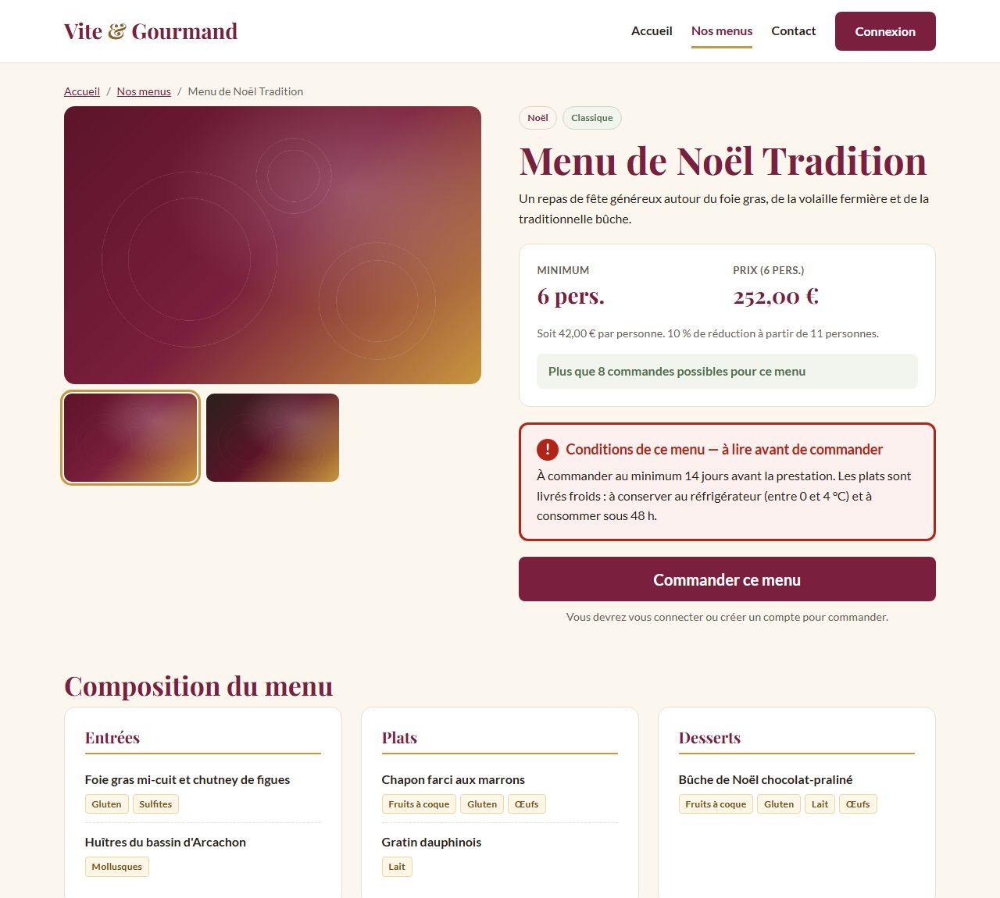
Cliquez sur Contact, puis renseignez un titre, votre message et votre adresse e-mail. La demande est envoyée par e-mail à l'entreprise, qui vous répondra à l'adresse indiquée.
Depuis Connexion → Créer un compte, renseignez votre nom, prénom, numéro de mobile, adresse e-mail et adresse postale, puis choisissez un mot de passe. Il doit contenir au moins 10 caractères, dont une majuscule, une minuscule, un chiffre et un caractère spécial ; les règles se cochent en vert pendant la saisie. Acceptez les CGV et la politique de confidentialité, puis validez.
Le compte reçoit automatiquement le rôle « utilisateur », vous êtes connecté et un e-mail de bienvenue vous est envoyé.
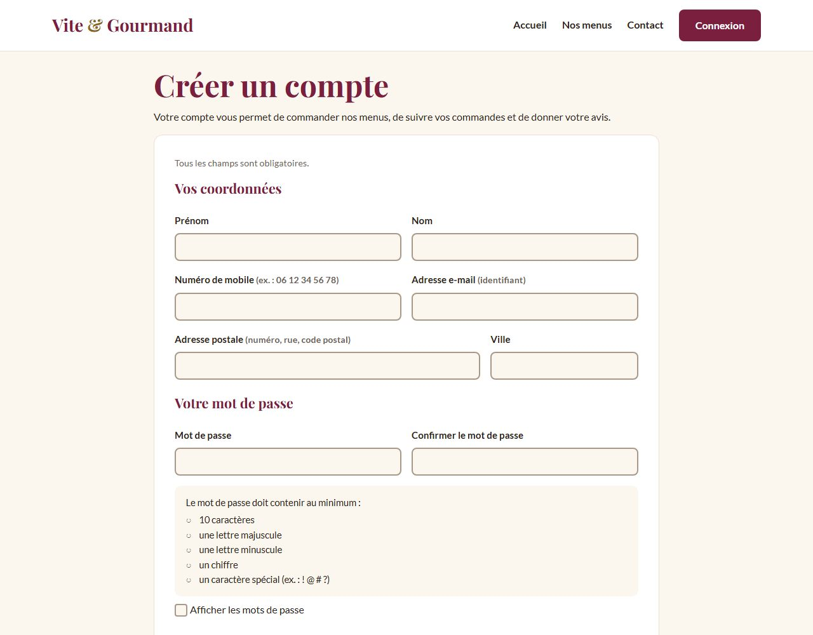
Connectez-vous avec le compte client.demo@example.com / Client@Demo2026.
Cliquez sur Connexion, saisissez votre e-mail et votre mot de passe. Après 5 essais erronés, la connexion est bloquée pendant 15 minutes (protection contre les attaques automatisées).
En cas d'oubli, cliquez sur Mot de passe oublié ? et indiquez votre e-mail : un lien de réinitialisation vous est envoyé. Il est valable 1 heure et ne fonctionne qu'une seule fois.
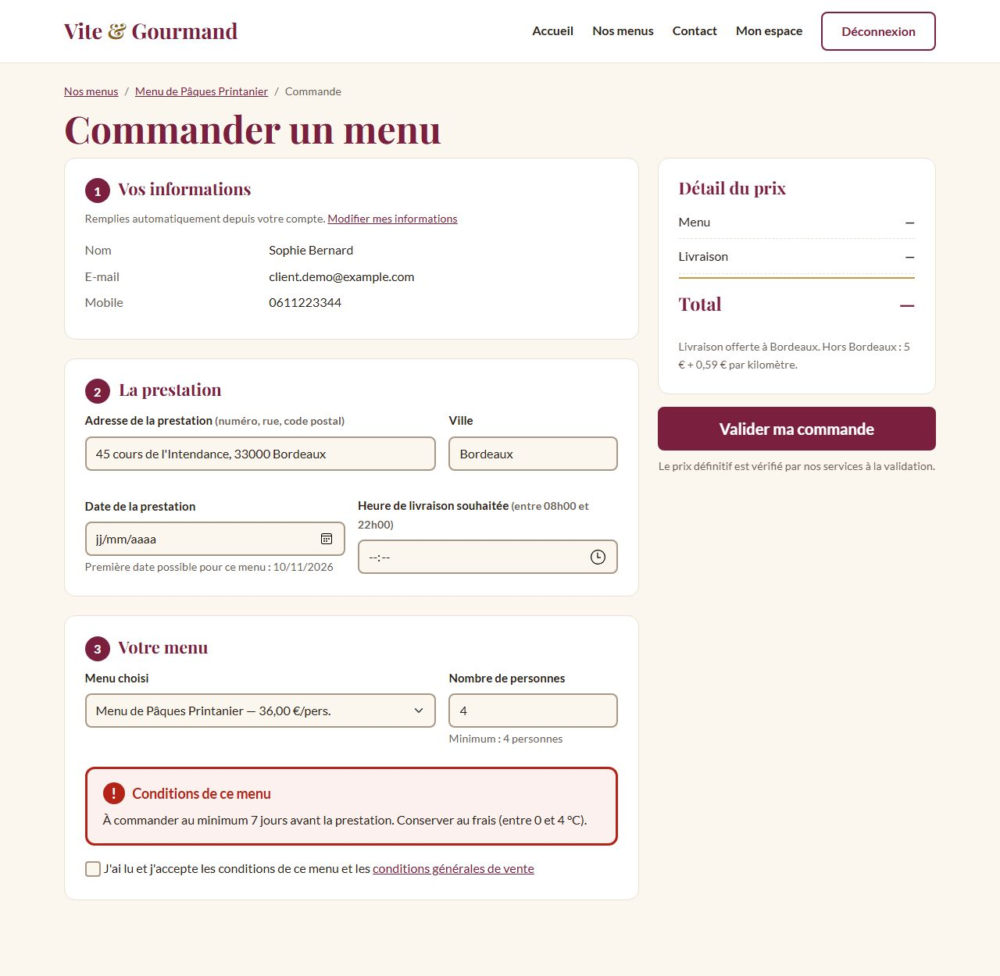
Cliquez sur Mon espace : la liste de vos commandes s'affiche avec leur statut. Cliquez sur Détail pour voir une commande.
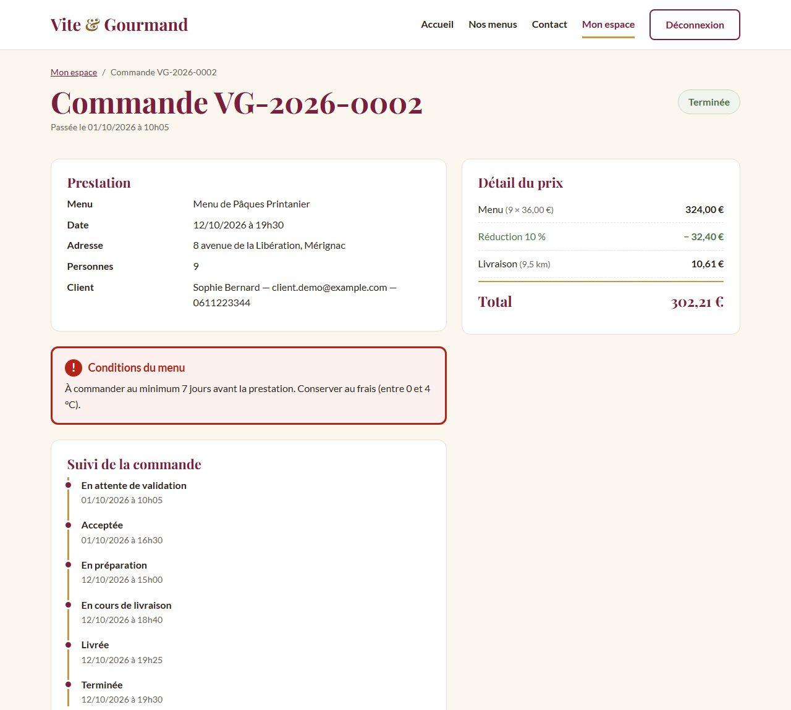
Quand la commande est « Terminée », vous recevez un e-mail vous invitant à donner votre avis. Dans le détail de la commande, choisissez une note de 1 à 5, écrivez un commentaire et envoyez. L'avis est publié sur la page d'accueil après validation par un employé.
Dans Mon espace → Mes informations, modifiez vos coordonnées. Pour changer de mot de passe, saisissez d'abord le mot de passe actuel.
Connectez-vous avec le compte julie@vite-gourmand.fr / Julie@Employe2026. L'espace employé s'ouvre automatiquement. Les onglets en haut donnent accès à chaque fonction.
Il résume le travail à faire : commandes à valider, à préparer, matériel à récupérer et avis à modérer. Chaque tuile est cliquable.
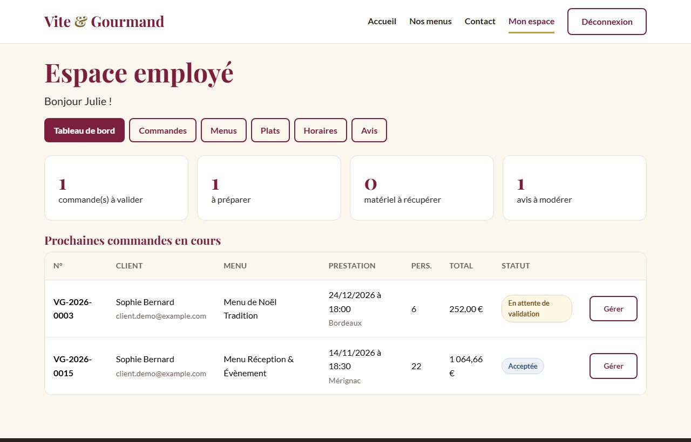
Onglet Commandes : filtrez par statut ou recherchez un client (nom, e-mail ou numéro de commande), puis cliquez sur Gérer.
Faire avancer une commande — les étapes s'enchaînent dans l'ordre, sans saut possible :
| Statut | Signification |
|---|---|
| Acceptée | La commande reçue est validée par l'équipe. |
| En préparation | L'équipe cuisine prépare la commande. |
| En cours de livraison | L'équipe logistique livre la commande. |
| Livrée | Le client a été livré. Cochez « Du matériel a été prêté » si c'est le cas. |
| En attente du retour de matériel | Seulement si du matériel a été prêté. Le client reçoit un e-mail : restitution sous 10 jours ouvrés, sinon 600 € de frais (CGV). |
| Terminée | Commande livrée sans prêt, ou matériel restitué. Le client reçoit un e-mail l'invitant à donner son avis. |
Modifier ou annuler une commande : ces actions ne sont possibles qu'après avoir contacté le client. Le formulaire exige d'indiquer le mode de contact (téléphone ou e-mail) et le motif. Le client est prévenu par e-mail, et en cas d'annulation le stock du menu est rendu.
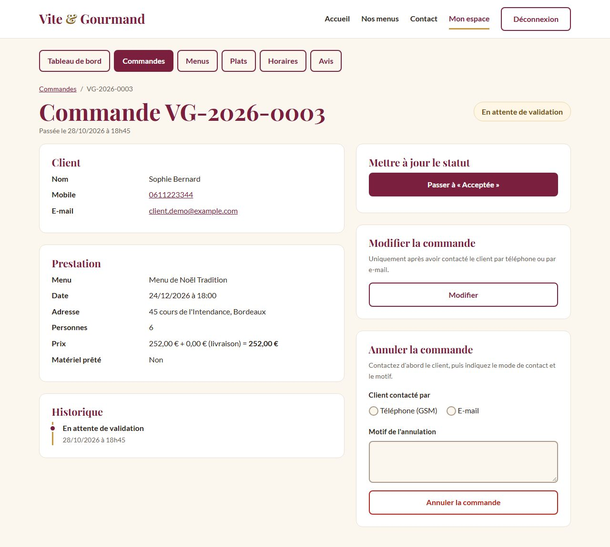
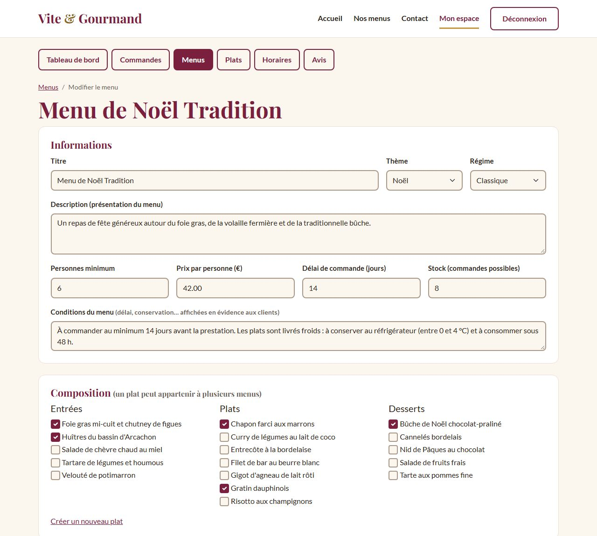
Connectez-vous avec le compte jose@vite-gourmand.fr / Jose@Admin2026. L'administrateur dispose de toutes les fonctions de l'employé, plus les onglets Employés et Statistiques.
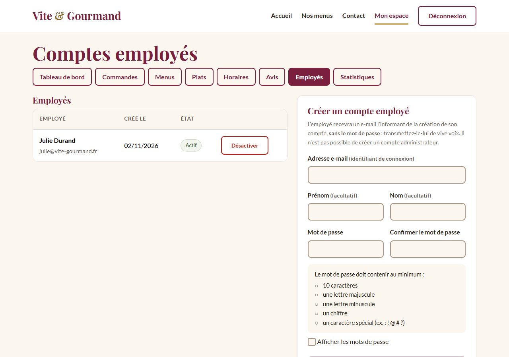
L'onglet Statistiques affiche, à partir de la base NoSQL (MongoDB) :
Les filtres permettent de choisir un menu et une période (du … au …). Survolez une barre (ou atteignez-la au clavier) pour afficher sa valeur. Les commandes annulées ne sont pas comptées.
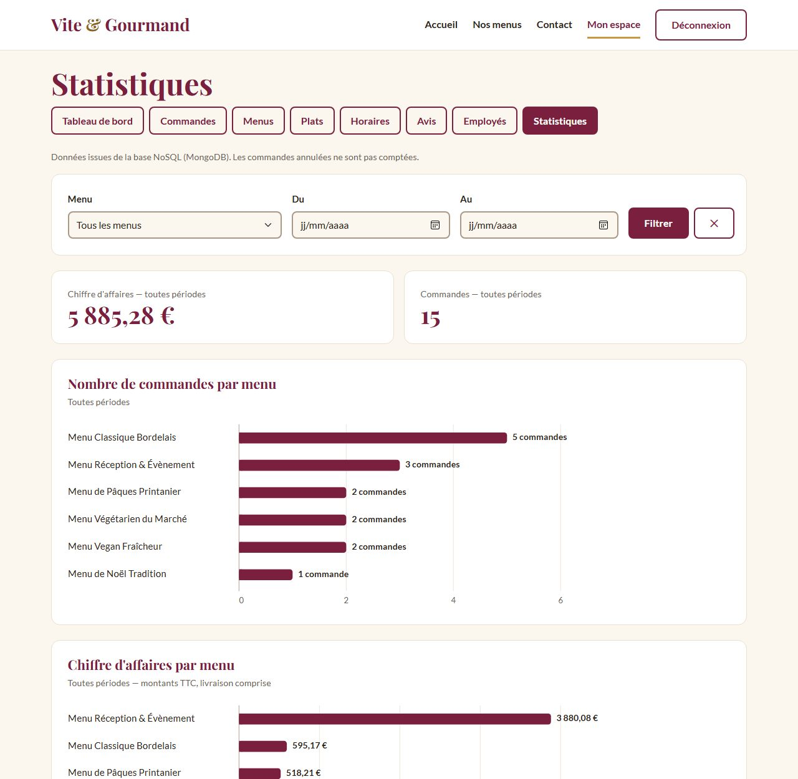
| Évènement | Destinataire |
|---|---|
| Création de compte | Le client (e-mail de bienvenue) |
| Mot de passe oublié | L'utilisateur (lien valable 1 h) |
| Commande validée | Le client (confirmation et détail du prix) |
| Modification / annulation par un employé | Le client (avec le motif) |
| Statut « En attente du retour de matériel » | Le client (10 jours ouvrés, 600 € de frais) |
| Statut « Terminée » | Le client (invitation à donner son avis) |
| Formulaire de contact | L'entreprise |
| Création d'un compte employé | L'employé (sans le mot de passe) |
En environnement local, si aucun serveur d'envoi (SMTP) n'est configuré, les e-mails sont enregistrés dans le dossier storage/mails sous forme de fichiers .eml, lisibles avec un logiciel de messagerie.